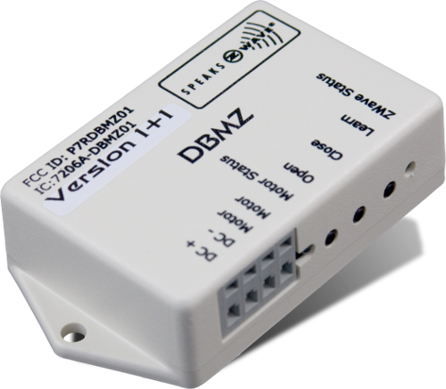

HDL_DBMZ
Firmware Version : 2.1 |
 |
KurzinfoA Dieses Gerät ist ein Z-Wave Aktor. Drücken Sie zum Inkludieren oder Exkludieren des Gerätes die LEARN-Taste einmalig. Durch diese Taste wird ebenfalls ein Node Information Frame ausgesendet. Weitergehende Informationen finden sich in den jeweiligen Abschnitten dieses Handbuches. |
Produktbeschreibung
Die Hunter Douglas Jalousiesteuerung steuert Rohrmotoren von Fensterjalousien über Z-Wave-Funk. Die Ansteuerung des Motors erfolgt über den 24 V Gleichstrom mittels Polumkehr. Damit sind eine Vielzahl von Fenstern - zum Beispiel des Herstellers Velux steuerbar. Eine lokale Bedienung am Gerät ist nur zu Testzwecken vorgesehen. Die Steuerung zeichnet sich durch einen besonders geringen Eigenstromverbrauch aus.
Installationsanleitung
Das Gerät wird zum Steuern von Jalousie-Motoren mit Gleichstrom genutzt. Dazu muss über ein externes Netzteil eine 24 V Gleichspannung mit einer Mindestleistung von 12 W vorhanden sein. Die beiden Pole des Netzteiles werden mit den beiden als DC+ und DC- bezeichneten Klemmen verbunden. Die beiden Zuleitungen zum Motor werden mit den Klemmen 'Motor' verbunden. Das Gerät kann mittels der beiden Montageöffnungen fest an eine Wand oder in eine Montagedose installiert werden.
Kalibration
Um die Laufzeit der Steuerung an die geometrischen Gegebenheiten der Jalousie anzupassen, drücken Sie die beiden Tasten 'OPEN' und 'CLOSE' für mindestens 10 Sekunden, bis die Motor-LED grün leuchtet. Danach können Sie die beiden Tasten loslassen. Drücken Sie innerhalb von 10 Sekunden erneut den 'CLOSE' Taster. Die Jalousie wird nun zwischen den Endlagen hin- und herfahren und so die Steuerzeitpunkte ermitteln.
Verhalten des Gerätes im Z-Wave Netz
I Im Auslieferungszustand ist das Gerät mit keinem Z-Wave-Netz verbunden. Damit es mit anderen Z-Wave Geräten kommunizieren kann, muss es in ein bestehendes Z-Wave Netz eingebunden werden. Dieser Prozess wird bei Z-Wave Inklusion genannt. Geräte können Netzwerke auch wieder verlassen. Dieser Prozess heißt bei Z-Wave Exklusion. Beide Prozesse werden von einem Controller gestartet, der dazu in einen Inklusion- bzw. Exklusion-Modus geschaltet werden muss. Das Handbuch des Controllers enthält Informationen, wie er in diese Modi zu schalten ist. Erst wenn der Controller des Z-Wave Netzes im Inclusion-Modus ist, können Geräte hinzugefügt werden. Das Verlassen des Netzes durch Exklusion führt zum Rücksetzen dieses Gerätes in den Auslieferungszustand.
Drücken Sie zum Inkludieren oder Exkludieren des Gerätes die LEARN-Taste einmalig.
Bedienung des Gerätes
Das Gerät ermöglicht die Steuerung eines Gleichstrom-Jalousiemotors über Z-Wave Funkkommandos. Für Testzwecke existieren zwei Taster 'OPEN' und 'CLOSE' am Gerät, um den Motor manuell zu bedienen.
Node Information Frame
NIF Der Node Information Frame ist die Visitenkarte eines Z-Wave Gerätes. Es ist ein spezielles Datenpaket, in dem der Gerätetyp sowie die Funktionen des Gerätes bekanntgemacht werden. Inklusion und Exklusion eines Gerätes wird von diesem mit einem Node Information Frame beantwortet. Zusätzlich kann der Node Information Frame für bestimmte Konfigurationsprozesse des Z-Wave Netzes - zum Beispiel das Setzen von Assoziationen - benötigt werden.
Das Drücken der LEARN-Taste am Gerät führt zum Senden eines Node Information Frame.
Konfigurationseinstellungen
Z-Wave Produkte können direkt nach der Inklusion im Netz verwendet werden. Durch Konfigurationseinstellungen kann das Verhalten des Gerätes jedoch noch besser an die Anforderungen der Anwendung angepasst und zusätzliche Funktionen aktiviert werden.
WICHTIG: Manche Steuerungen erlauben nur die Konfiguration von vorzeichenbehafteten Werten zwischen -128 und 127. Um erforderliche Werte zwischen 128 und 255 zu programmieren, muss der gewünschte Wert minus 256 eingegeben werden. Beispiel: um einen Parameter auf einen Wert von 200 zu setzen, müsste der Wert 200-256 = -56 eingegeben werden, wenn nur positive Werte bis 128 akzeptiert werden. Bei Werten von 2 Byte Länge wird die gleiche Logik angewandt: Werte über 32768 werden als negative Werte angegeben
| Wert | Beschreibung |
|---|---|
| 0 | Normal (Voreingestellt) |
| 1 | Kalibrierungskommando |
| Wert | Beschreibung |
|---|---|
| 0 | Normal (Voreingestellt) |
| 1 | Umbekehrt |
| Wert | Beschreibung |
|---|---|
| 0 | Deaktiviert (Voreingestellt) |
| 1 | Aktiviert |
Technische Daten
| Explorer Frames | Nein |
| SDK | 4.27 |
| Geräteart | Slave with routing capabilities |
| Allgemeiner Z-Wave-Gerätetyp | Multilevel Switch |
| Spezieller Z-Wave-Gerätetyp | Multiposition Motor |
| Router | Ja |
| FLiRS | Nein |
| Firmware Version | 2.1 |